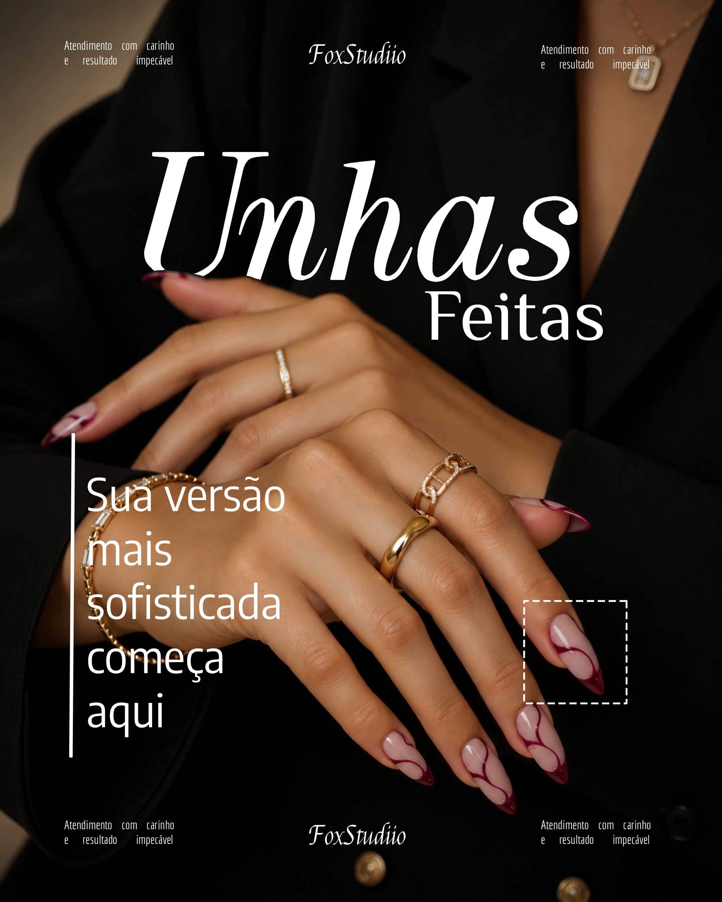
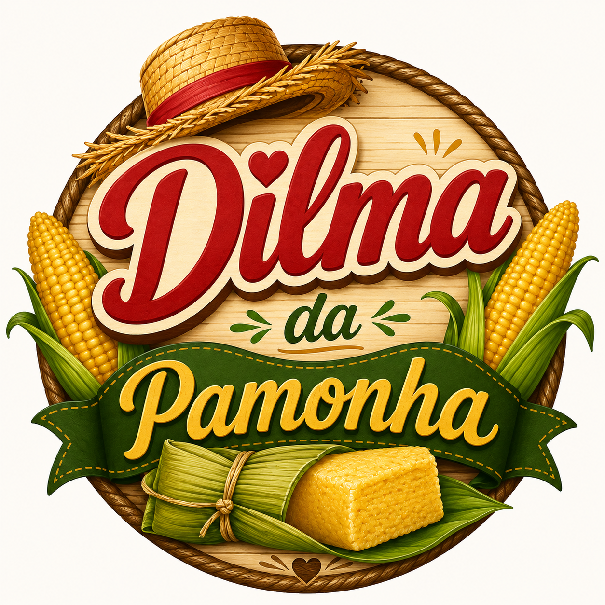
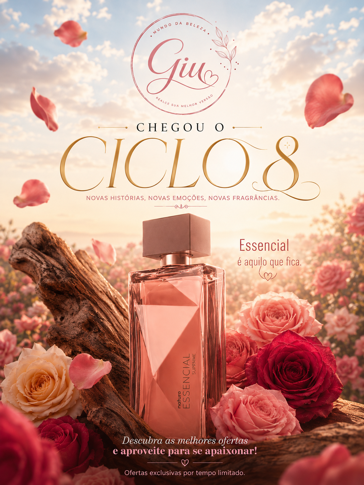

// PORTFÓLIO
Artes & Identidade Visual
Uma seleção de posts, logotipos e materiais promocionais criados para diferentes marcas.
Post · Identidade Visual

Post · FoxStudiio

Logo · Dilma da Pamonha
Cardápio · Dilma da Pamonha

Post Promocional · Ciclo 07

Post Promocional · Giu